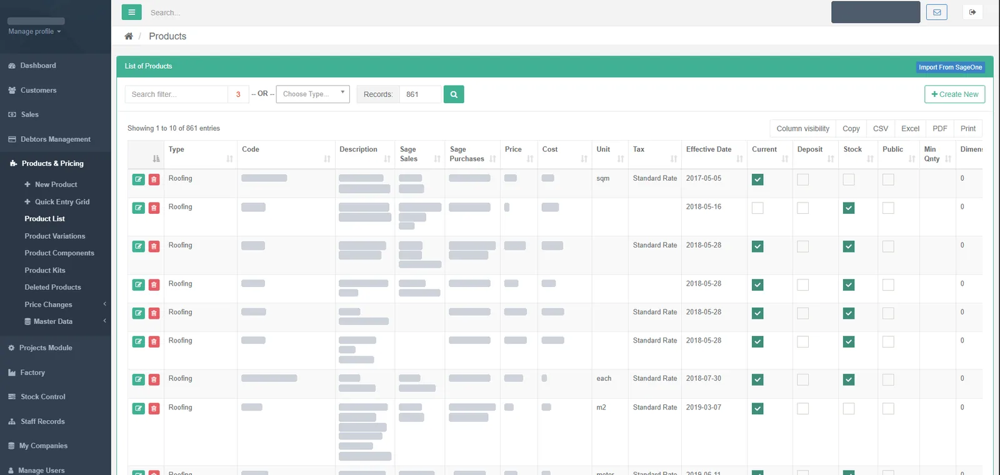

ManaGEM · Full case study · about 8 minutes
Reimagining the experience behind everyday business operations.
The original product, what made it hard to use, how I approached the redesign, and the reasoning behind each decision — including the Take-On onboarding concept.
01Product background
A business runs through ManaGEM, not just inside it.
ManaGEM is an established ERP and business-management platform developed by GEMIS, my employer, and used by its clients to run day-to-day operations. It began with a template bought around 2015 and grew over many years. This project redesigned that existing product — it did not build a new one.
- Customers & suppliersAccounts, contacts, warranties, suppliers
- SalesEnquiries, quotations, targets, reports
- Jobs & projectsBookings, foremen, progress, job costing
- Stock & purchasingStores, movements, purchase orders, stock takes
- ProductionFactory jobs and builds
- FinanceInvoices, debtors, receipts, accounting sync
- AdministrationStaff, users, companies, reference data
Why an ERP needs connected information architecture
These are not separate tools. An enquiry becomes a quotation, a job, a stock movement and an invoice, and each step reads the record the last one created. If a record is hard to find, or its state unclear, in one module, the problem travels to the next team. The structure of the product matters as much as any single screen.
- 01EnquiryA lead is captured and tracked.
- 02QuotationThe work is priced from the product catalogue.
- 03JobAccepted work becomes a project or a factory build.
- 04Stock / ProductionMaterials are bought, stored, dispatched or built.
- 05InvoiceCompleted work is billed and synced to accounting.
- 06PaymentOutstanding balances are followed up.
- Customers & suppliers
- Products & pricing
- Staff
- Reports
- Accounting sync
02Understanding the existing experience
What the original product asked of its users.
These are screenshots of the original interface. Client names, contact details and financial figures are replaced by grey bars; everything else — layout, labels, alignment and controls — is unchanged.
Navigation structure
One long sidebar. Sections such as Sales and Stock Control expand into a dozen or more items each, so the menu changes length as you move and offers no sense of grouping.
Information density and labels
The Customers list has fourteen columns, three of them headed “Description”. Values in some rows have moved into the wrong columns, so the table cannot be read reliably.
Table hierarchy and actions
Every invoice row carries up to ten buttons — edit, open, delete, post to Sage, create warranty, upload, PDF, delivery, send, copy — while whether it is paid is a small checkbox.

Very wide reports
The Projects report runs to sixteen columns. Budget and actual figures sit side by side with only a grey background to separate them.
Status visibility
The dashboard leads with four headline numbers and a chart; open enquiries and inspection reports sit lower down, and messages appear only as an envelope icon in the top bar.
Visual consistency
Each module has its own layout: green banner panels on some lists, plain tables on others, and different filter controls on each.
Not shown above, but part of the brief: forms gave no clear sign that a save had worked, and onboarding a new client relied on collecting and typing in their records by hand.
03Defining the design problem
Six problems, each with a design opportunity.
04Product-design approach
Understanding the system before changing it.
This was product and workflow analysis of the existing system against the redesign brief. It was not formal user research, and it is not presented as such.
- 01
Screen-by-screen review
Every screen in the product, what it is for, and what it shows.
- 02
Workflow relationships
Which screens create the records others read, from enquiry to payment.
- 03
Information hierarchy
What a user needs first on each screen, and what can wait.
- 04
Navigation
Grouping destinations by the part of the business they serve.
- 05
Reuse of functionality
Keeping every function businesses depend on, and changing how it is reached.
- 06
Simplification
Removing visual noise and moving rarely used actions out of the way.
The navigation model

Core1
- Dashboard
Customers3
- Customers
- Customer Contacts
- Warranties
Sales10
- New Enquiry
- Open Enquiries
- Closed Enquiries
- Invoices
- Sage Invoices
- Inspection Reports
- Sales Targets
- Quote Templates
- Reports
- Master Data
Operations5
- Debtors Management
- Products & Pricing
- Projects Module
- Factory
- Stock Control
Admin5
- Staff Records
- My Companies
- Manage Users
- Master Data
- Settings
On every screen
- Breadcrumb
- Home, then the group, then the page — so location is always visible.
- Search
- One field in the top bar, so nothing depends on remembering the menu.
- Counts
- Items with open work carry a number, such as open enquiries.
05Detailed design decisions
Problem, consideration, decision, evidence.
The strongest examples from the redesign. Each pairs the original screen with the redesign where both exist.
A · Navigation and discoverability
From one long menu to five groups
- Problem
- The original sidebar is a single list whose sections expand in place — Stock Control alone opens into a dozen or more items — so its length and order keep changing.
- Consideration
- A new client learns a product through its navigation. The structure has to explain the business, not mirror how features were added.
- Design decision
- Five labelled groups by business area, every destination visible at once, plus a breadcrumb, top-bar search and counts on items with open work.
B · Information hierarchy and operational records
Every list built the same way, with state first
- Problem
- Original lists open with filters in a coloured banner, then wide tables where actions dominate each row and state is a checkbox or buried in a column.
- Consideration
- Users act on what a list tells them. Invoice information in particular has to be readable at a glance, and consistent wherever it appears.
- Design decision
- One anatomy for every list — title and summary line, totals, filters, table — with a plain-word status on every row and actions moved off the row.
Original interface · client data redacted
Redesign · demo data

- Grouped navigation
Five labelled groups; the current page is highlighted.
- Search and orientation
Top-bar search and a breadcrumb on every screen.
- Title and summary line
What the list is, and its most important figure in words.
- One primary action
The main thing to do here, always in the same place.
- Summary totals first
Billed, paid, outstanding and overdue before any rows.
- Filters and export
Removable filter chips, a date range, and CSV, Excel or PDF.
- Plain-word status
Paid, Partial, Unpaid, Overdue — words and colour together.
Original interface · client data redacted

Redesign · demo data

Whether the underlying invoice data reflects correctly is an engineering matter; the redesign addresses how that information is presented, and no data fix is claimed here.
C · Form feedback and save-state clarity
One visible moment of commitment
- Problem
- Forms did not communicate clearly that a save had worked, so people pressed save again — risking duplicate submissions. Items needing attention were also easy to miss.
- Consideration
- Saving should be a single, deliberate step that the user can see coming and see completed, without hunting for confirmation.
- Design decision
- Multi-step forms with visible progress, a review screen showing everything entered, one final action, and a return to the updated list. Messages and open-work counts appear where people already look.


D · Simplifying without removing
Related functions brought together
- Problem
- Functions accumulated over the years as separate destinations, which made the product feel larger and harder to learn than the work it supports.
- Consideration
- Businesses depend on these functions. The aim was to reduce the effort of reaching them, not to take them away.
- Design decision
- Related areas become tabs inside one module — Stock Control holds suppliers, purchase orders, stores, movements and stock takes — and the dashboard offers shortcuts to common tasks.


06Interface consistency and reusable patterns
A small set of parts, used everywhere.
Specimens cut from the redesigned screens. These patterns repeat across the product; they are not presented as a formal, documented design system.


07 · ManaGEM Take-On
Onboarding, without the retyping
Before a new client can use ManaGEM, their customers, products, pricing and staff have to be in it. That depended on collecting the information and typing it in by hand. Take-On is my design for a guided alternative: the client uploads what they already have, an AI-assisted process structures it, the client reviews and corrects it, and GEMIS checks it before anything is created.
UX/UI prototype completed; development underway
Eleven steps, five phases
Prepare
- 01Welcome
- 02Trust & compliance
- 03Company profile
Provide
- 04Document upload
Process
- 05AI extraction
- 06Validation summary
Review
- 07Customers
- 08Products
- 09Staff
Submit
- 10Confirm & submit
- 11Completion
01Welcome
Take-On prototype · sample data 02Trust & compliance
Take-On prototype · sample data 03Company profile

Take-On prototype · sample data 04Document upload

Take-On prototype · sample data 05AI extraction

Take-On prototype · sample data 06Validation summary

Take-On prototype · sample data 07Customer review

Take-On prototype · sample data 08Product review

Take-On prototype · sample data 09Staff review

Take-On prototype · sample data 10Confirm & submit

Take-On prototype · sample data 11Completion

Take-On prototype · sample data


Prototype behaviour versus production
- DesignThe UX/UI prototype is complete. Development is underway; it is not a released feature.
- Simulated processingExtraction, confidence scores and timings are designed states, not output from a live AI service.
- Sample recordsCompanies, customers, products and staff in the prototype are placeholder data.
- Draft compliance wordingPOPIA, encryption and audit statements show where that content belongs. They are not claims about implemented security.
Balancing automation with oversight
The AI assists. People decide.
Every decision in Take-On keeps the client able to see what the system did, judge how sure it is, and correct it — and keeps a person at GEMIS responsible for the final check.
Take-On · 01
Flexible document upload
Clients bring what they already hold.
- Why
- Retyping every record is the manual work the brief set out to reduce.
- Design
- One drop area per kind of information; required ones are marked.
- Detail
- Accepted formats on every area: PDF, XLSX, CSV, DOCX, JPG, PNG.
- Fallback
- Any category can be entered manually instead.
Take-On · 02
Transparent processing
Say what is happening, as it happens.
- Why
- A spinner asks for trust in something nobody can see.
- Design
- A running log names each document as it is read.
- Detail
- Counts of records found and flagged update as it runs.
- Record
- Each stage is listed with a time.
Take-On · 03
Confidence and validation
Put effort where it is needed.

- Why
- Equal care on every record is slow, and people stop reading.
- States
- Verified, Needs review, Possible duplicate, Low confidence.
- Detail
- Each state uses a word and an icon, not colour alone.
- Speed
- Filters jump straight to records needing a decision.
Take-On · 04
Evidence and correction
Show the source behind every record.
- Evidence
- Source document, original text and a confidence score per record.
- Gaps
- Missing fields are called out, such as “Email not found in source document”.
- Control
- Every field is editable; a record can be confirmed or rejected.
- Duplicates
- Merge with existing, keep both, or discard.
Take-On · 05
Human verification
Submitting hands over to a person.
- Why
- Automation does not remove the need for oversight.
- Before
- Outstanding issues are listed before the client submits.
- Wording
- The last screen says “Submitted for GEMIS review”, not “Done”.
- GEMIS side
- A queue shows each company’s progress and sign-offs.
08Validation and measurement
How we plan to evaluate the redesign.
The redesigned product has not been released, so none of these has been measured. They are proposed measures for after release — not results.
- Proposed
Finding information
Time taken to locate key records, such as an overdue invoice or a customer’s open job.
- Proposed
Repeated saves
How often a form is submitted more than once.
- Proposed
Duplicate submissions
Duplicate records created from the same entry.
- Proposed
Key workflows
Time to complete workflows such as enquiry to quotation.
- Proposed
Time to first invoice
For a new client, from account setup to their first invoice.
- Proposed
Take-On completion
Share of clients who finish onboarding once they start.
- Proposed
Manual correction
Number of extracted records a client has to correct.
- Proposed
GEMIS review time
Time for GEMIS to verify a Take-On submission.
No usability testing of the redesign is documented, and none is claimed.
09Implementation and outcome
Designed. Now moving through implementation.
From a design perspective the redesign is complete, and the development team is now coding it. The redesigned screens have not been released to customers. Rather than releasing them one at a time, GEMIS plans to release the redesigned product as a complete, coordinated experience once implementation is ready.
No performance outcomes are available yet. The notes below separate what I designed from what is still being built.
- Product redesign
- Design completed
- Core product
- Development underway
- Customer release
- Awaiting coordinated release
- Take-On
- UX/UI prototype completed; development underway
- Production validation
- Pending release
Existing functionality
The modules and workflows ManaGEM already supported, kept in the redesign.
My design contribution
How those workflows are organised, connected, presented and confirmed — and the Take-On experience.
Prototype behaviour
Simulated extraction, sample records and draft compliance wording in Take-On.
Built by others
Backend, database, AI and integration work belongs to the development team, not to my role.
Both prototypes are built for desktop screens and use demo data.
10Reflection
What this project taught me about designing an ERP.
Appearance is the last layer
The Customers list did not need nicer colours; it needed columns that meant something and rows that lined up. Most of the work was deciding what each screen is for before deciding how it looks.
Modules depend on each other
An invoice is only as clear as the job and enquiry behind it. Changing one screen meant checking every screen that reads its records — which is why I redesigned workflow by workflow, not page by page.
Simplify the path, keep the function
Businesses rely on features that look redundant from outside. The safer move was usually to regroup a function or move it out of the way, rather than remove it.
What I want to measure
Once released, I want to see whether repeat saves and duplicate records fall, whether new clients find invoices and jobs without help, and how many Take-On records still need manual correction.
That’s the full story.
Short on time? The overview covers the role, decisions and redesigned interface in about three minutes.
Back to the overview